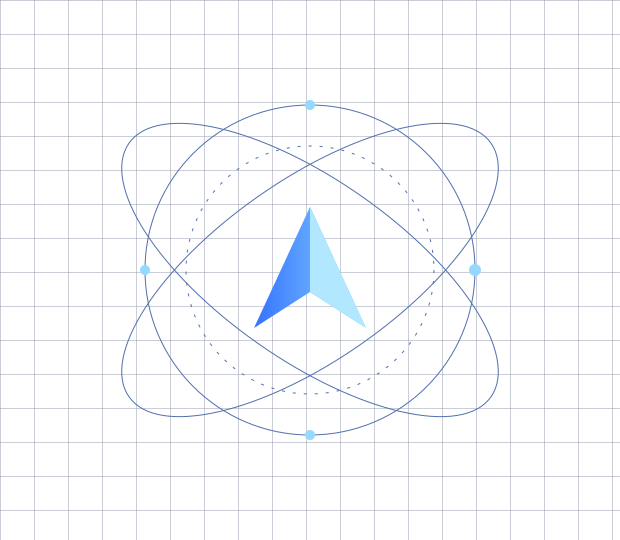

One Dream operations
Replace FC.one for admissions, batches, attendance, fees, progress and reporting. See the operations scope →
Implementation proposal · Bengaluru
A new operations platform for One Dream Gymnastics & Calisthenics Fitness, connected to the myPAL Marketing suite you already have.

Replace FC.one for admissions, batches, attendance, fees, progress and reporting. See the operations scope →
Reuse campaign tools, scheduling, publishing, templates and analytics. Connect centre events to approved journeys. See the existing product →
Approve staff workflows, prepare records and implement centre operations. Roadmap
Connect WhatsApp and website enquiries, rehearse migration and train staff. Migration
Roll out to one batch first and validate records before expanding. Commercials